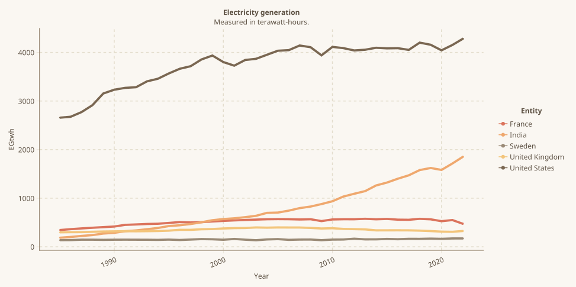

Code
using CairoMakie,CSV,DataFrames,Pipe,Tidier,HypertextLiteral
using MakieThemes
using StatsBase
using AlgebraOfGraphics
Makie.set_theme!(ggthemr(:dust))load pacakge
using CairoMakie,CSV,DataFrames,Pipe,Tidier,HypertextLiteral
using MakieThemes
using StatsBase
using AlgebraOfGraphics
Makie.set_theme!(ggthemr(:dust))df=@pipe CSV.File("./data/electricity-generation.csv")|>DataFrame|>rename(_,"Electricity generation - TWh"=>:EGtwh)|>coalesce.(_, 0.0)
show(levels(df.Entity))
first(df,5)["ASEAN (Ember)", "Afghanistan", "Africa", "Africa (EI)", "Africa (Ember)", "Albania", "Algeria", "American Samoa", "Angola", "Antigua and Barbuda", "Argentina", "Armenia", "Aruba", "Asia", "Asia (Ember)", "Asia Pacific (EI)", "Australia", "Austria", "Azerbaijan", "Bahamas", "Bahrain", "Bangladesh", "Barbados", "Belarus", "Belgium", "Belize", "Benin", "Bermuda", "Bhutan", "Bolivia", "Bosnia and Herzegovina", "Botswana", "Brazil", "British Virgin Islands", "Brunei", "Bulgaria", "Burkina Faso", "Burundi", "CIS (EI)", "Cambodia", "Cameroon", "Canada", "Cape Verde", "Cayman Islands", "Central African Republic", "Central America (EI)", "Chad", "Chile", "China", "Colombia", "Comoros", "Congo", "Cook Islands", "Costa Rica", "Cote d'Ivoire", "Croatia", "Cuba", "Cyprus", "Czechia", "Democratic Republic of Congo", "Denmark", "Djibouti", "Dominica", "Dominican Republic", "East Timor", "Eastern Africa (EI)", "Ecuador", "Egypt", "El Salvador", "Equatorial Guinea", "Eritrea", "Estonia", "Eswatini", "Ethiopia", "Europe", "Europe (EI)", "Europe (Ember)", "European Union (27)", "Falkland Islands", "Faroe Islands", "Fiji", "Finland", "France", "French Guiana", "French Polynesia", "G20 (Ember)", "G7 (Ember)", "Gabon", "Gambia", "Georgia", "Germany", "Ghana", "Gibraltar", "Greece", "Greenland", "Grenada", "Guadeloupe", "Guam", "Guatemala", "Guinea", "Guinea-Bissau", "Guyana", "Haiti", "High-income countries", "Honduras", "Hong Kong", "Hungary", "Iceland", "India", "Indonesia", "Iran", "Iraq", "Ireland", "Israel", "Italy", "Jamaica", "Japan", "Jordan", "Kazakhstan", "Kenya", "Kiribati", "Kosovo", "Kuwait", "Kyrgyzstan", "Laos", "Latin America and Caribbean (Ember)", "Latvia", "Lebanon", "Lesotho", "Liberia", "Libya", "Lithuania", "Low-income countries", "Lower-middle-income countries", "Luxembourg", "Macao", "Madagascar", "Malawi", "Malaysia", "Maldives", "Mali", "Malta", "Martinique", "Mauritania", "Mauritius", "Mexico", "Middle Africa (EI)", "Middle East (EI)", "Middle East (Ember)", "Moldova", "Mongolia", "Montenegro", "Montserrat", "Morocco", "Mozambique", "Myanmar", "Namibia", "Nauru", "Nepal", "Netherlands", "New Caledonia", "New Zealand", "Nicaragua", "Niger", "Nigeria", "Niue", "Non-OECD (EI)", "North America", "North America (EI)", "North America (Ember)", "North Korea", "North Macedonia", "Norway", "OECD (EI)", "OECD (Ember)", "Oceania", "Oceania (Ember)", "Oman", "Pakistan", "Palestine", "Panama", "Papua New Guinea", "Paraguay", "Peru", "Philippines", "Poland", "Portugal", "Puerto Rico", "Qatar", "Reunion", "Romania", "Russia", "Rwanda", "Saint Helena", "Saint Kitts and Nevis", "Saint Lucia", "Saint Pierre and Miquelon", "Saint Vincent and the Grenadines", "Samoa", "Sao Tome and Principe", "Saudi Arabia", "Senegal", "Serbia", "Seychelles", "Sierra Leone", "Singapore", "Slovakia", "Slovenia", "Solomon Islands", "Somalia", "South Africa", "South America", "South Korea", "South Sudan", "South and Central America (EI)", "Spain", "Sri Lanka", "Sudan", "Suriname", "Sweden", "Switzerland", "Syria", "Taiwan", "Tajikistan", "Tanzania", "Thailand", "Togo", "Tonga", "Trinidad and Tobago", "Tunisia", "Turkey", "Turkmenistan", "Turks and Caicos Islands", "Uganda", "Ukraine", "United Arab Emirates", "United Kingdom", "United States", "United States Virgin Islands", "Upper-middle-income countries", "Uruguay", "Uzbekistan", "Vanuatu", "Venezuela", "Vietnam", "Western Africa (EI)", "Western Sahara", "World", "Yemen", "Zambia", "Zimbabwe"]| Row | Entity | Code | Year | EGtwh |
|---|---|---|---|---|
| String | Any | Int64 | Float64 | |
| 1 | ASEAN (Ember) | 0.0 | 2000 | 368.08 |
| 2 | ASEAN (Ember) | 0.0 | 2001 | 396.6 |
| 3 | ASEAN (Ember) | 0.0 | 2002 | 423.11 |
| 4 | ASEAN (Ember) | 0.0 | 2003 | 447.7 |
| 5 | ASEAN (Ember) | 0.0 | 2004 | 485.55 |
list=("United States","United Kingdom","France","India","Sweden")
@eval(Main, myvars =list )
df2=@chain df begin
@filter(Entity in !!myvars)
end| Row | Entity | Code | Year | EGtwh |
|---|---|---|---|---|
| String | Any | Int64 | Float64 | |
| 1 | France | FRA | 1985 | 344.465 |
| 2 | France | FRA | 1986 | 362.995 |
| 3 | France | FRA | 1987 | 378.486 |
| 4 | France | FRA | 1988 | 392.087 |
| 5 | France | FRA | 1989 | 404.85 |
| 6 | France | FRA | 1990 | 417.2 |
| 7 | France | FRA | 1991 | 451.62 |
| 8 | France | FRA | 1992 | 460.02 |
| 9 | France | FRA | 1993 | 469.66 |
| 10 | France | FRA | 1994 | 474.6 |
| 11 | France | FRA | 1995 | 491.2 |
| 12 | France | FRA | 1996 | 509.16 |
| 13 | France | FRA | 1997 | 500.96 |
| ⋮ | ⋮ | ⋮ | ⋮ | ⋮ |
| 179 | United States | USA | 2011 | 4088.87 |
| 180 | United States | USA | 2012 | 4040.67 |
| 181 | United States | USA | 2013 | 4055.61 |
| 182 | United States | USA | 2014 | 4096.01 |
| 183 | United States | USA | 2015 | 4083.99 |
| 184 | United States | USA | 2016 | 4087.56 |
| 185 | United States | USA | 2017 | 4052.31 |
| 186 | United States | USA | 2018 | 4201.55 |
| 187 | United States | USA | 2019 | 4158.38 |
| 188 | United States | USA | 2020 | 4043.18 |
| 189 | United States | USA | 2021 | 4153.62 |
| 190 | United States | USA | 2022 | 4286.91 |
## 3. plot
axis = (width = 1000, height =500,xticklabelrotation = pi/8,title="Electricity generation",subtitle="Measured in terawatt-hours.")
data_layer = data(df2)
mapping_layer=mapping(:Year,:EGtwh,color=:Entity)
visual_layer = visual(ScatterLines;stroke=1,strokecolor=(:red,0.8),markersize=4,linewidth=5)
draw(data_layer * mapping_layer * visual_layer,axis=axis)┌ Warning: Keyword argument `bgcolor` is deprecated, use `backgroundcolor` instead.
└ @ Makie ~/.julia/packages/Makie/RgxaV/src/makielayout/blocks/legend.jl:23